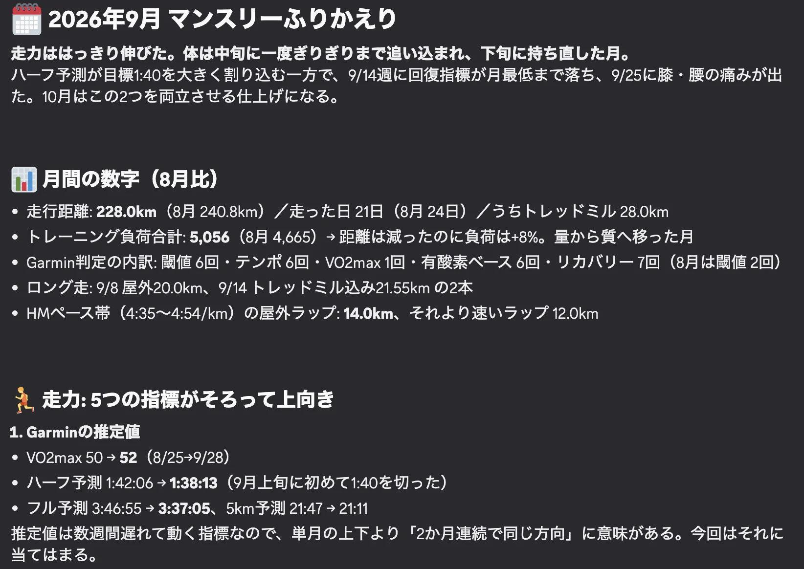
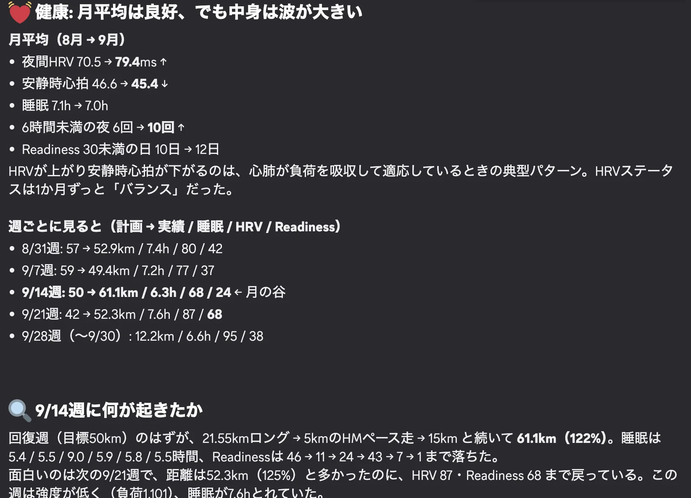

スマートウォッチをつけていても、歩数や睡眠スコアをちらっと見るくらいで、たまったデータをじっくり見返すことは少ないのではないでしょうか。私もそうでした。GarminやApple Watchを8年ほどつけてきたのに、記録はほとんど眺めるだけでした。
そのデータを生成AIに読ませて、自分の言葉で質問するようになってから、見えるものが変わりました。「今月の私は、どんな感じだった？」と聞くと、1か月分の記録をまたいで、自分では気づいていなかった変化を拾ってくれます。
たとえば2026年9月。趣味のランニングで、予定より2割以上多く走った週が2回ありました。同じように走りすぎたのに、平均睡眠が6.3時間だった週は体の回復を示す数字が大きく落ち、7.6時間だった週は比較的よく戻っていました。これだけで睡眠が原因だとは言えません。それでも、走る量ばかり気にしていた私が、睡眠にも目を向けるようになるきっかけになりました。
8年間測ってもらっていたのに、見ていたのは距離とタイムだけだった
私は男子3人を育てながら、月に200kmほど走っています。次の目標は、2027年冬のフルマラソンで3時間30分を切ることです。
一方で、ここ数年は家庭で生成AIをどう使えるかを試してきました。献立を考える、学校のプリントから予定を拾う、子どもに合わせた学習ツールを作る。そうした試行錯誤が『AI×家事』という本になりました。
大学院では生体計測工学を学びました。ただし、医師でも運動生理学の研究者でもありません。ここで書くのは診断の話ではなく、自分の身体データを私がどう読んでいるかという、個人的な実践です。
そんな私ですが、スマートウォッチのデータは長いあいだ、ほとんど使えていませんでした。
走った日は距離とタイムを見る。速ければうれしい。遅ければ残念。睡眠スコアが良ければ少し喜び、悪ければそっと閉じる。
心拍数、睡眠時間、VO2max、HRV、接地時間。時計は毎日かなり細かく測ってくれていたのに、私はその一部しか見ていませんでした。生体計測工学専攻とは何だったのか、と自分でも思います。
「この数字、何？」から、1か月単位の質問へ
変わり始めたのは、生成AIを使うようになってからです。
最初にやったのは簡単なことでした。Garminに表示されたHRVという数字を見て、「これ、どういう意味？」とAIに聞く。そのうち、画面をスクリーンショットして「今日のデータはどう見ればいい？」と聞くようになりました。それだけでも、素通りしていた数字が少しずつ読めるようになります。
ただ、続けていると次の疑問が出てきました。今日の心拍が高いか低いかより、1か月前と比べてどうなのか。調子が悪い時期の前に、睡眠やHRVに何か変化はなかったのか。1日分を説明してもらうだけでは、足りなくなってきたのです。
そこで2026年の春から、Garminの記録を毎晩AIに読ませる仕組みを作っています。走行距離、ペース、心拍数、睡眠、HRVなどを過去の記録や練習計画と一緒に渡し、AIが書いた振り返りがDiscordに届きます。「脚が重かった」「トレッドミルに変更した理由は雨」といった時計に残らないことは、私が短く書き足します。
この仕組みをどう作り、使いながらどう直してきたかは、知りたいことが、毎日届く。家事から趣味へ、AIと仕組みを作る楽しみで書いています。
最初から、こんな仕組みを作るつもりだったわけではありません。「この数字は何？」から始まり、「今日を見てほしい」「昨日と比べたい」「1か月単位で見たい」と、知りたいことが増えるたびに、仕組みのほうが変わってきました。
「9月の私は、どんな感じだった？」と聞いて見えたこと
9月末に、1か月分のデータをまとめてAIに見てもらいました。聞いたのは、かなりざっくりしたことです。
「9月の私は、どんな感じだった？」
返ってきたのは、ハーフマラソンに向けて積み重ねてきた練習が、いくつもの数字に表れているという振り返りでした。VO2maxは上がり、Garminの予測タイムも縮まっていました。走り方に関する指標にも変化がありました。

日々の感覚としては、「今月もけっこう走ったな」くらいです。1か月分を並べて見て、ちゃんと力はついてきているらしいと、初めて少し実感できました。
その中で、いちばん気になったのが睡眠でした。
9月には、計画より多く走った週が2回ありました。どちらも予定より2割以上多く走ったのに、一方では回復の状態がかなり落ち、もう一方では比較的よく戻っていました。平均睡眠時間は、前者が6.3時間、後者が7.6時間でした。

もちろん、これだけで睡眠が原因だったとは言えません。運動の強度も生活上の負荷も違いますし、Garminの回復に関する指標には、睡眠を計算に使うものもあります。数字同士が連動して見えるのは、ある意味で当然の部分もあります。
それでも私は、走る量ばかり気にしていたけれど、走り続けるためには睡眠もかなり大事だなと思いました。
「睡眠は大事」と言われれば、それは知っています。でも、自分のデータを並べて、眠れていた週と眠れていなかった週ではこう違う、と見せられると、受け取り方が変わります。一般論として知っていたことが、自分の話になりました。
メーカーの画面には、私の質問が用意されていない
振り返ると、ここ数年でスマートウォッチそのものが急に便利になったわけではありません。8年前から、データはかなり取れていました。
スマートウォッチのアプリには、メーカーが用意したグラフや指標があります。それぞれはよくできています。ただ、そこに並んでいるのはメーカーが想定した問いへの答えで、私が知りたいことがいつもその画面にあるとは限りません。
- 9月の私はどうだった？
- 8月と何が違う？
- 睡眠が短かった時期には、ほかに何が起きていた？
- 最近の変化で、私が見落としていそうなものはある？
こうした質問は、睡眠と走行、今月と先月のように、画面や期間をまたぎます。生成AIを使うと、こんな聞き方でも手元のデータをたどりながら一緒に考えてくれます。私にとっての変化は、新しい数字が手に入ったことではなく、もともとあった数字に自分の言葉で質問できるようになったことでした。
AIの読みは一つの見方として受け取っています。痛みや強い疲労があるときは、数字より自分の身体の感覚を優先しています。
8年分の記録に、まだ聞いていないことがある
これはランナーに限った話でもないと思います。睡眠を測っている人なら、平日と休日で違いがあるのか。運動した日のほうが眠れているのか。忙しかった週にはどんな変化が出ていたのか。
私自身も、まだそこまで見られていません。8年分のデータはありますが、季節でどう変わるのかもよく分かっていません。仕事が立て込んだ時期に何が起きているのかも知りたい。自分では調子がいいと思っている日に、数字の上でも何か違いがあるのかも気になります。
最近は、データを見るたびに、答えより次の質問が増えます。
8年分もあるので、まだしばらく遊べそうです。